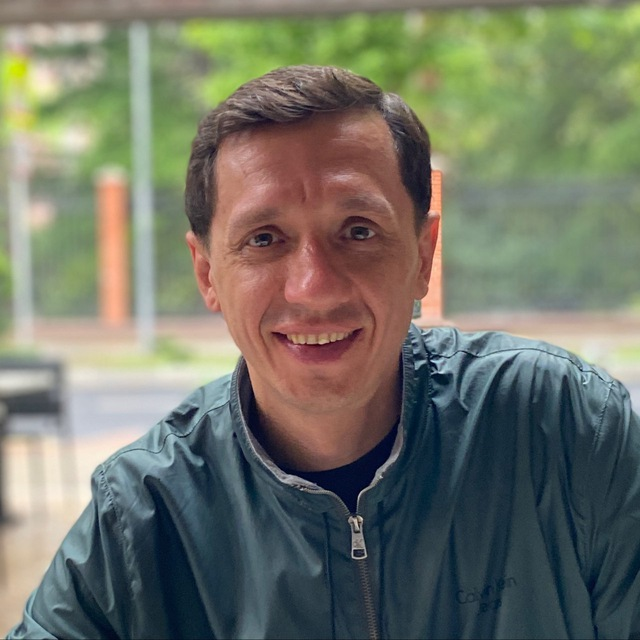
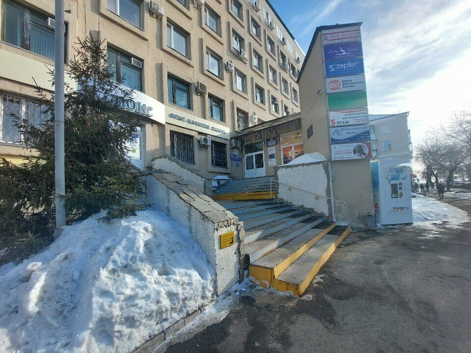

Обследуем здания и оформляем перепланировки в Кургане и области
Скажем, в каком состоянии дом или квартира, и подготовим документы, которые примут администрация, банк и суд. Пришлите фото или план, и мы бесплатно ответим, что делать и сколько это стоит.
- Больше 10 лет и 1000 объектов
- По ГОСТ 31937-2024
- Выезд по всей области
- Первая консультация бесплатно
С чем к нам приходят
Нажмите на свою ситуацию: откроются ответы на вопросы, которые задают чаще всего. Не нашли свой вопрос? Напишите его в Telegram, ответит эксперт.
Перепланировка квартирыУзаконить сделанное, согласовать до ремонта, банк не дает ипотеку покупателюцена уточняется
Перепланировку уже сделали. Можно ли ее узаконить?
Чаще всего даОсмотрим квартиру, сделаем обмеры и техническое заключение о том, что конструкции дома не пострадали. Затем подготовим проект и подадим документы в администрацию. Если администрация откажет, это заключение пригодится в суде.
Узаконить не получится, если ослабили несущие стены, ухудшили условия соседей или объединили кухню с газовой плитой и комнату без перегородки. Это скажем сразу после осмотра.
Продаю квартиру, а банк не дает покупателю ипотеку из-за перепланировки. Что делать?
Оформить перепланировку до сделкиПришлите фото плана из техпаспорта и фото квартиры. Скажем, что именно не устраивает банк и что быстрее: узаконить изменения или вернуть как было по плану.
Хочу снести стену. Как понять, можно ли?
Зависит от того, несущая ли стенаОпределим по плану БТИ и на месте. Перегородку обычно можно убрать по проекту. Проем в несущей стене делают только с расчетом и усилением, а в панельных домах это чаще всего запрещено.
Что нужно подготовить?
План и выпискаТехпаспорт или поэтажный план БТИ, выписка из ЕГРН и фото комнат. Если документов нет, подскажем, где их заказать.
Сколько времени занимает?
Проект за N рабочих днейСогласование в администрации идет по ее срокам, обычно до 45 дней. Мы сопровождаем его до решения.
Частный дом и постройкиУведомление о строительстве, пристрой, баня, гараж, трещины в стенахцена уточняется
Нужно ли разрешение на строительство частного дома?
Нет, нужно уведомлениеДля жилого дома на участке под ИЖС вместо разрешения подают уведомление в администрацию: перед началом стройки и после ее окончания. Подготовим проект и документы и подскажем, что заполнить.
Как оформить пристрой, баню или гараж?
Сначала смотрим саму постройкуПроверяем, капитальная ли постройка и как она стоит относительно границ участка. Затем готовим техническое заключение и документы для регистрации. Если постройка нарушает отступы, скажем, как действовать дальше.
По дому пошли трещины. Это опасно?
Скажем после обследованияОсмотрим фундамент, стены и перекрытия, поставим маячки на трещины, чтобы понять, растут ли они. В заключении будет причина и что нужно сделать: наблюдать, усилить или срочно ремонтировать.
Как признать дом аварийным?
Через комиссию администрацииЖители подают заявление в межведомственную комиссию, к нему прикладывают заключение специализированной организации о состоянии дома. Это заключение делаем мы: обследуем дом по ГОСТ 31937-2024 и описываем все дефекты. Решение принимает комиссия.
Магазин, склад, шиномонтажПроект, разрешение на строительство, ввод в эксплуатацию, перевод в нежилоецена уточняется
Строю магазин или шиномонтаж. Какие нужны документы?
Проект, разрешение и ввод в эксплуатациюПодготовим проект, получим разрешение на строительство, а после стройки поможем ввести здание в эксплуатацию, чтобы его можно было зарегистрировать и сдавать в аренду.
Хочу открыть магазин в квартире на первом этаже. Что нужно?
Перевод в нежилое помещениеНужен проект перепланировки с отдельным входом и решение администрации о переводе. Сначала проверим, можно ли перевести именно эту квартиру.
Покупаю или арендую здание. Стоит ли его проверить?
Да, до подписания договораОбследование покажет состояние фундамента, стен, кровли и сетей и сколько примерно уйдет на ремонт. С заключением проще договориться о цене.
Спор, суд или покупкаЭкспертиза для суда с застройщиком или подрядчиком, проверка дома перед покупкойцена уточняется
Застройщик или подрядчик сделал с нарушениями. Чем поможете?
Заключением для претензии и судаЗафиксируем дефекты с замерами и фото, укажем нарушенные нормы и стоимость исправления. С таким заключением можно отправить претензию или обратиться в суд.
Примет ли суд ваше заключение?
Делаем его по правилам для судаЗаключение по ГОСТ и СП, с замерами, фото и расчетами. Оценивает его суд, поэтому мы пишем выводы понятно и с опорой на нормы.
Покупаю дом. Что проверите?
Все, что потом дорого чинитьФундамент, стены, перекрытия, кровлю, сырость в подвале, инженерные сети. Скажем честно, есть ли скрытые проблемы, без запугивания.
Администрации и учрежденияОбследование по ГОСТ, заключения по аварийным домам, дефектные ведомостипо смете
Работаете с бюджетными учреждениями?
Да, по 44-ФЗ и 223-ФЗДоговор, акты и полный пакет закрывающих документов. Подготовим коммерческое предложение для обоснования цены закупки.
Что входит в обследование здания?
По ГОСТ 31937-2024Изучаем документы, осматриваем и обмеряем конструкции, проверяем дефекты приборами, при необходимости считаем несущую способность. Итог: заключение с категорией технического состояния и рекомендациями.
Нужна дефектная ведомость и решение для ремонта.
СделаемОбмеры, дефектная ведомость и техническое решение: что разобрать, что усилить, какие материалы. Подрядчик понимает, что делать, а заказчик знает, какой результат должен получить.
Есть ли у вас СРО?
уточняетсяРаботаем по ГОСТ, СП и СанПиН, есть страховка и профессиональное оборудование.
Как проходит работа
Пишете или звоните
Присылаете фото объекта, план или коротко описываете задачу.
Бесплатная консультация
Говорим, что можно сделать, какие документы нужны и сколько это стоит.
Выезд на объект
Осмотр, обмеры, фото, проверка приборами. Выезжаем по всей области.
Заключение или проект
Передаем документы и сопровождаем согласование, если оно нужно.
Цены
Точная цена зависит от площади и задачи. Назовем ее бесплатно после фото и короткого разговора.
| Услуга | Цена |
|---|---|
| Проект перепланировки квартирыобмеры, проект, техническое заключение | цена уточняется |
| Перепланировка под ключпроект и согласование в администрации | цена уточняется |
| Обследование квартиры или частного домазаключение о техническом состоянии | цена уточняется |
| Строительная экспертиза для судазамеры, фото, выводы со ссылками на нормы | цена уточняется |
| Проект и разрешение на строительствомагазины, склады, шиномонтажи | цена уточняется |
| Обследование здания для организацийпо ГОСТ 31937-2024, дефектные ведомости | по смете |
Первая консультация бесплатно. Выезд по Курганской области.

Александр Музыченко
Эксперт по обследованию зданий и строительной экспертизе. Больше 10 лет в профессии и больше 1000 обследованных объектов: квартиры, частные дома, многоквартирные дома, коммерческие здания.
Без паники и запугивания: только замеры, расчеты и выводы. Объясняем простыми словами, что с домом и что с этим делать.
По каким документам работаем
- ГОСТ 31937-2024правила обследования технического состояния зданий
- СП и СанПиНнормы, на которые ссылаемся в каждом заключении
- Договор и страховкафиксируем сроки и цену, ответственность застрахована
- СРОуточняется у клиента
Опишите задачу
Пришлите фото объекта или плана и пару слов о том, что нужно. Ответим в рабочее время в течение дня.
- Телефон
- +7 919 591-79-38
- Telegram
- @MuzAleksandr
- Офис
- Курган, ул. Советская, 128, офис 612, 6 этаж
- Время
- пн-пт 9:00-18:00
- Выезд
- Курган и вся Курганская область
Как нас найти
Офис в центре Кургана, в 200 метрах от Центрального рынка. Перед визитом позвоните или напишите: эксперт может быть на выезде.

- Улица Советская, 128. Ориентир: Центральный рынок, 200 метров.
- Поднимитесь на 6 этаж.
- Офис 612.